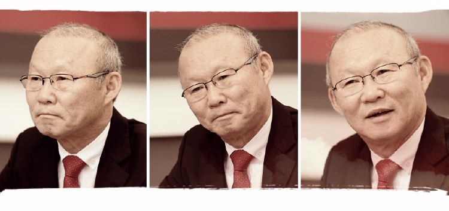
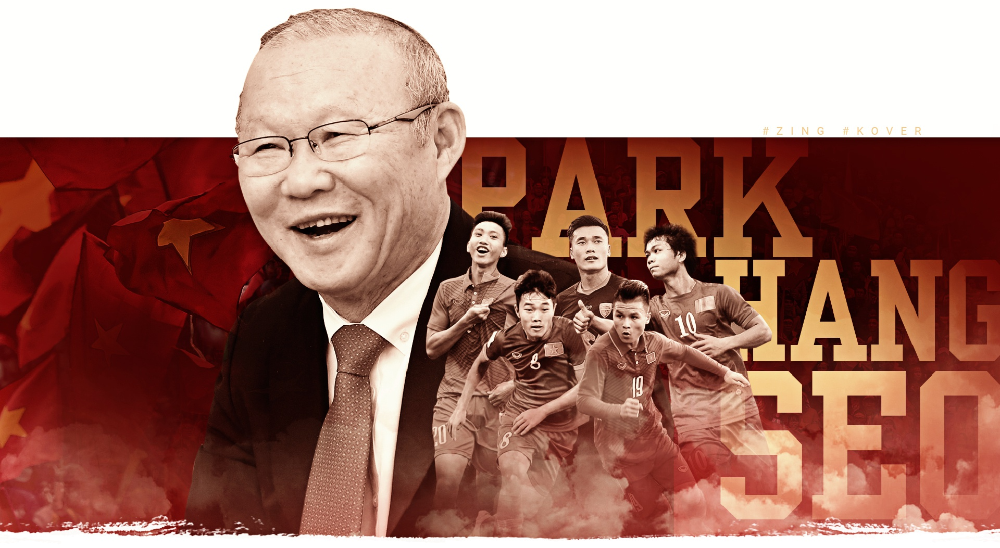
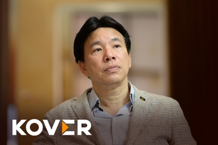
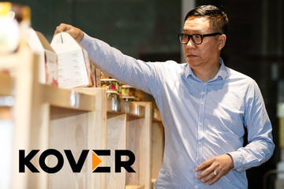
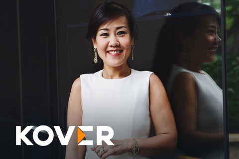

Trong lịch sử bóng đá
Việt Nam, hiếm có
HLV ngoại nào được
yêu mến nhiều như ông
Park Hang-seo chỉ sau
vài tháng
KOVER
Sống có trách nhiệm với tình yêu
của người hâm mộ, nỗ lực gấp đôi
trong tập luyện và không bao giờ
được phép ngạo mạn là những lời
nhắn nhủ của HLV Park Hang-seo
dành cho U23 Việt Nam.
của người hâm mộ, nỗ lực gấp đôi
trong tập luyện và không bao giờ
được phép ngạo mạn là những lời
nhắn nhủ của HLV Park Hang-seo
dành cho U23 Việt Nam.
Kỳ tích của U23 Việt Nam tại Giải U23 châu Á 2018 không phải là thành tích vĩ đại nhất trong sự nghiệp của HLV Park Hang-seo. Nhưng khác với World Cup 2002, chiến công này không có bóng dáng của Guus Hiddink huyền thoại. Thắng lợi của U23 Việt Nam là thành tựu riêng của ông Park Hang-seo. Ông là người truyền cảm hứng và trực tiếp đưa đội bóng tới vinh quang.
Chỉ sau 3 tháng, HLV Park Hang-seo đã đem về 2 tấm huy chương cho U23 Việt Nam ở M-150 Cup và Giải U23 châu Á. Biển người trên các đường phố và những lá cờ đỏ rợp trời là sự ghi nhận đẹp nhất dành cho chiến lược gia người Hàn Quốc. Trong lịch sử bóng đá Việt Nam, hiếm có HLV ngoại nào được yêu mến nhiều đến thế chỉ sau vài tháng.
Tình yêu của người hâm mộ, vì thế, cũng là điều luôn khiến ông Park trăn trở. Làm sao để sống xứng đáng với những yêu thương của cổ động viên? Làm sao để luôn trách nhiệm trước chặng đường mới? Làm sao để không kiêu ngạo, làm sao để tái hiện kỳ tích? Tất cả những trăn trở ấy đã được HLV Park Hang-seo chia sẻ với Zing.vn trong cuộc gặp trước khi ông lên đường rời Việt Nam, về Hàn Quốc nghỉ Tết.

1/
KHI ĐƯỢC YÊU MẾN,
CÁC CẦU THỦ SẼ
CẢM THẤY CÓ
TRÁCH NHIỆM
CÁC CẦU THỦ SẼ
CẢM THẤY CÓ
TRÁCH NHIỆM
- Chúng ta hãy bắt đầu với một câu hỏi cũ. Theo ông, đâu là nguyên nhân dẫn tới thành công của U23 Việt Nam tại Giải U23 châu Á 2018?
- Theo tôi, có ba lý do lớn dẫn tới chiến công của U23 Việt Nam. Thứ nhất, tôi, ban huấn luyện và các cầu thủ đều tin rằng niềm tin là điều quan trọng nhất. Trong thời gian ngắn như thế, chúng tôi vẫn tin tưởng lẫn nhau. Tôi dành niềm tin cho học trò và họ tin tưởng ở tôi. Đó là yếu tố hàng đầu mang tới thành công.
Yếu tố thứ hai là sự tập trung cao độ của các cầu thủ. Thứ ba là sự nhiệt huyết và nỗ lực của từng cá nhân. Hợp ba điều ấy lại với nhau, U23 Việt Nam đã có kỳ tích vừa qua.
- Ông đã luôn nói về niềm tin của U23 Việt Nam. Niềm tin ấy thực ra có vai trò gì? U23 Việt Nam hôm nay có gì khác với đội tuyển ông từng tiếp nhận hồi tháng 12/2017?
- Khi tôi bắt đầu công việc ở U23 Việt Nam, tôi thấy các cầu thủ có rất nhiều ưu điểm. Nhưng tôi không cảm nhận được khát khao tự thân của mỗi người. Tôi đã nỗ lực để phát huy tối đa các điểm mạnh đồng thời hạn chế điểm yếu cho họ. Tôi thúc đẩy họ khát khao hơn, tận dụng ưu điểm nhiều hơn từ đó mang tới sự tự tin.
'
'
Tôi nghĩ các cầu thủ đã phần nào thể hiện được sự tự tin ấy. Bằng chứng là thắng lợi trước U23 Thái Lan ở M-150 Cup hồi tháng 12.
- Ngoài sự tự tin ấy, U23 Việt Nam còn thu được “chiến lợi phẩm” nào từ giải đấu này? Ông nghĩ tuyển U23 và bóng đá Việt Nam cần làm gì để lặp lại kỳ tích?
- Giải đấu này giúp U23 Việt Nam nhận được sự yêu thương từ người hâm mộ. Khi các cầu thủ được yêu thương, họ sẽ cảm thấy mình cần phải có trách nhiệm với người hâm mộ. Họ phải thể hiện sự trung thành và khát vọng với dân tộc. Huấn luyện họ càng lâu, tôi càng cảm thấy điều đó rõ ràng. Các cầu thủ không chỉ nói ra bằng lời, tôi còn cảm thấy suy nghĩ ấy hiển hiện trong mỗi hành động, cử chỉ của họ.
Để lặp lại thành tích này, U23 Việt Nam không được phép ngạo mạn. Họ phải nỗ lực nhiều gấp đôi và cố gắng trở về trạng thái ban đầu.
- Ông từng có mối quan hệ gần gũi với HLV nổi tiếng Guus Hiddink. Sau khi ông sang Việt Nam và đặc biệt giành thành tích cùng tuyển U23, ông Hiddink có biết và trao đổi gì với ông không?
- HLV Hiddink là người thầy lớn của tôi, người luôn in đậm trong tâm trí tôi. Tôi đã có cơ hội làm việc cùng ông ấy trước thềm World Cup 2002 trong 2 năm. Ông ấy đã truyền cho tôi rất nhiều kinh nghiệm mà sau này tôi có thể vận dụng trong công việc huấn luyện của mình.
Thông qua Liên đoàn bóng đá Hàn Quốc, tôi được biết ông Hiddink đã gửi thư chúc mừng cho tôi. Ở giải đấu vừa qua tại Trung Quốc, tôi đã vận dụng được nhiều bài học từ HLV Hiddink.

/ BẠN CÓ THỂ QUAN TÂM

CEO Alpha King: 'TP.HCM sẽ như Thượng Hải’
06:12 18/1/2019
BẤT ĐỘNG SẢN

Ông chủ Vinamit: Có bao nhiêu tiền mà không lăn xả vẫn thất bại
05:00 28/9/2018
KINH DOANH

'Marketing thành công đâu chỉ là một đoạn phim quảng cáo hay'
11:58 11/10/2018
XÃ HỘI